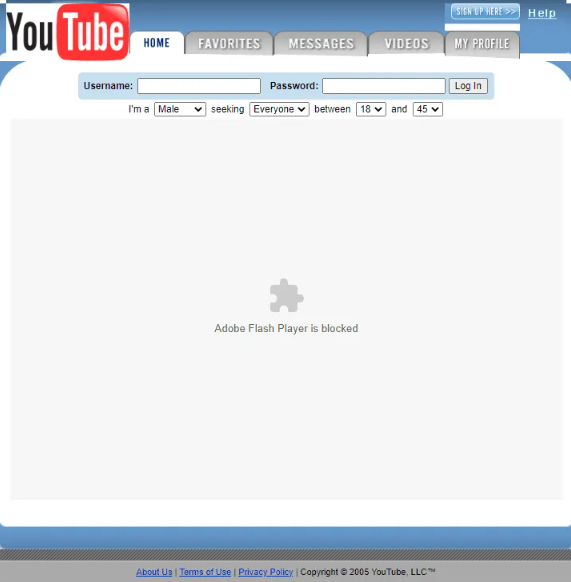
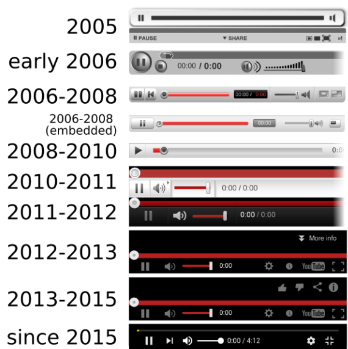

how youtube made?
It was registered on February 14, 2005, by Steve Chen, Chad Hurley, and Jawed Karim, three former employees of the American e-commerce company PayPal. They had the idea that ordinary people would enjoy sharing their “home videos.” The company is headquartered in San Bruno, California.
YouTube is an American online video-sharing platform headquartered in San Bruno, California, founded by three former PayPal employees—Chad Hurley, Steve Chen, and Jawed Karim—in February 2005. Google bought the site in November 2006 for US$1.65 billion, since which it operates as one of Google's subsidiaries. YouTube allows users to upload videos, view them, rate them with likes and dislikes, share them, add videos to playlists, report, make comments on videos, and subscribe to other users. The slogan "Broadcast Yourself" used for several years and the reference to user profiles as "Channels" signifies the premise upon which the platform is based, of allowing anyone to operate a personal broadcasting station in resemblance to television with the extension of video on demand. As such, the platform offers a wide variety of user-generated and corporate media videos. Available content includes video clips, TV show clips, music videos, short and documentary films, audio recordings, movie trailers, live streams, and other content such as video blogging, short original videos, and educational videos. As of February 2017, there were more than 400 hours of content uploaded to YouTube each minute, and one billion hours of content being watched on YouTube every day. As of October 2020, YouTube is the second-most popular website in the world, behind Google, according to Alexa Internet.[1] As of May 2019, more than 500 hours of video content are uploaded to YouTube every minute.[2] Based on reported quarterly advertising revenue, YouTube is estimated to have US$15 billion in annual revenues.
 first video on youtube